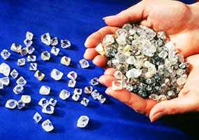

Пресс-центр ПАО “Севералмаз”
Подписывайтесь на рассылку новостей ПАО ”Севералмаз”
Перейти в раздел


Новости и пресс релизы
19 января 2017
Севералмаз в 2017 году планирует добыть 2,4 млн
В перспективе "Севералмаз" планирует увеличить добычу до 5 миллионов карат ежегодно, а также заняться освоением алмазоносных трубок "Пионерская" и "имени Ломоносова". По итогам прошлого года компания собиралась получить около 2 миллионов карат алмазов. В настоящий момент вышла на проектные параметры по промышленной добыче 4 миллионов тонн руды в год.

19 января 2017
Первые 10 млн. карат добыты ПАО "Севералмаз"
Алмаз весом в 30 карат, найденный в начале 2017 года в трубке "Архангельская", пополнил количество добытого на месторождении им. М.В. Ломоносова редкого природного ископаемого до 10 млн. карат.
1 апреля 2016
Добыча алмазов в Архангельской области в I полугодии достигла более 2,6 млн карат
Глубинных магматических пород. Под огромным давлением они выносят алмазы с глубин более 120 км. Часть этих газов проникает во вмещающие породы, как бы увеличивая наш поисковый объект», - говорит главный инженер НИГП Олег Ковальчук.
1 апреля 2016
Добыча алмазов в Архангельской области в I полугодии достигла более 2,6 млн карат
17 января 2016
Первые 10 млн. карат добыты ПАО "Севералмаз"
Медиа галерея